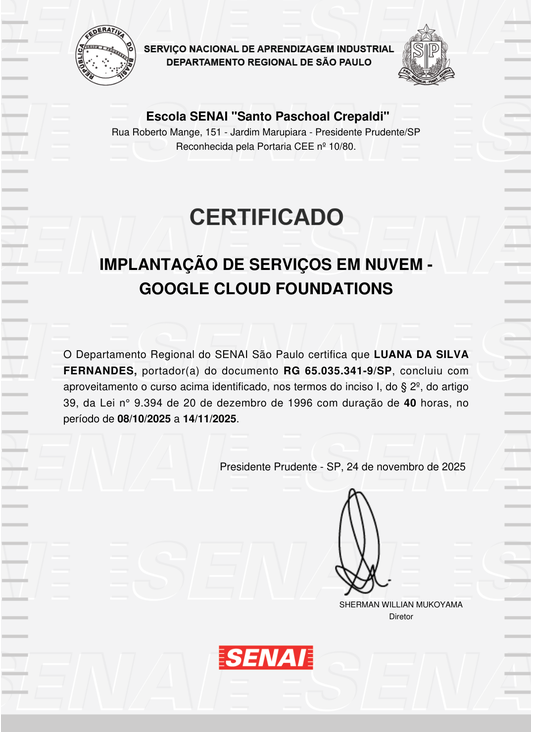
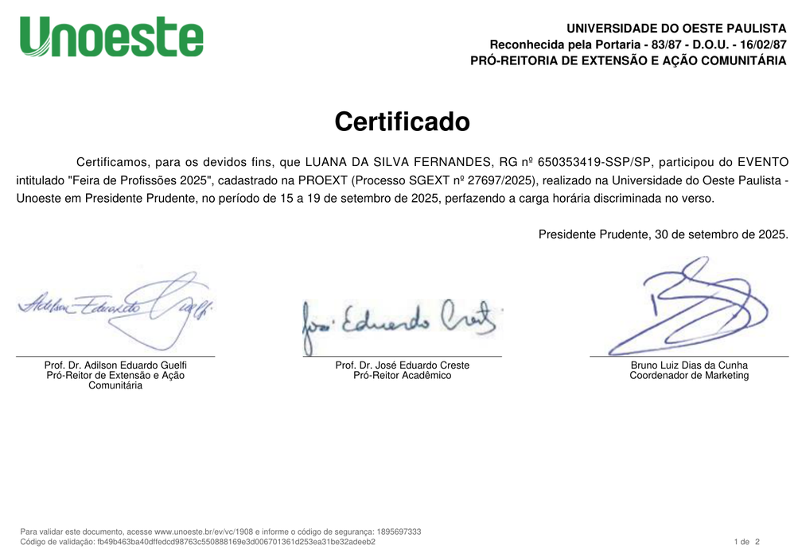
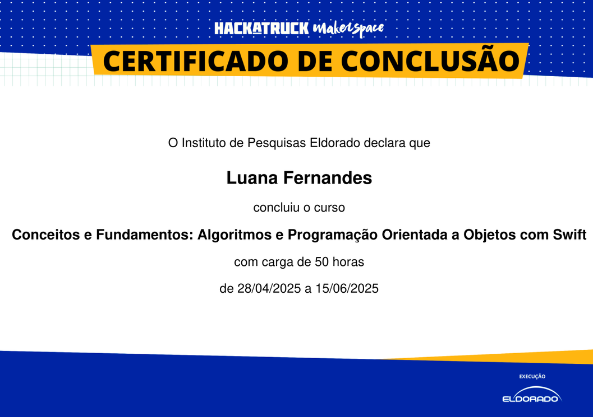
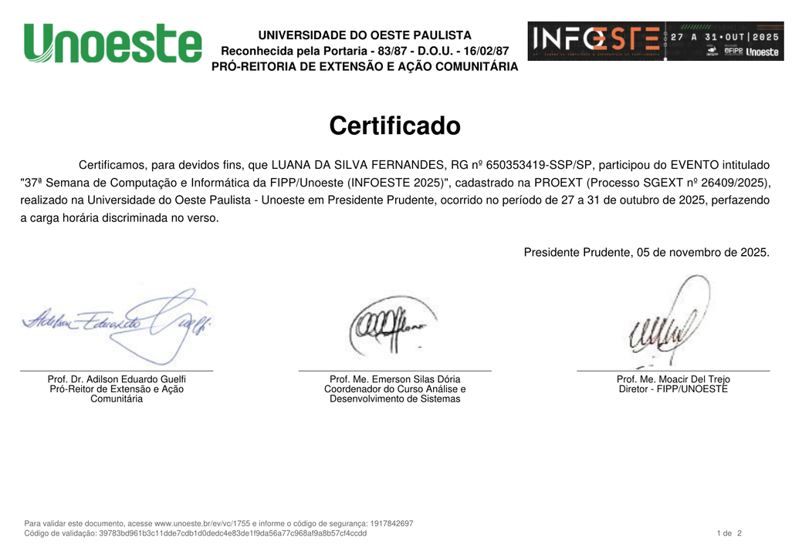
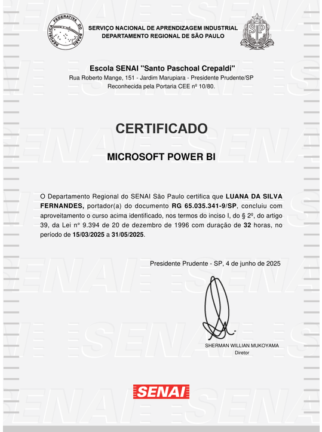
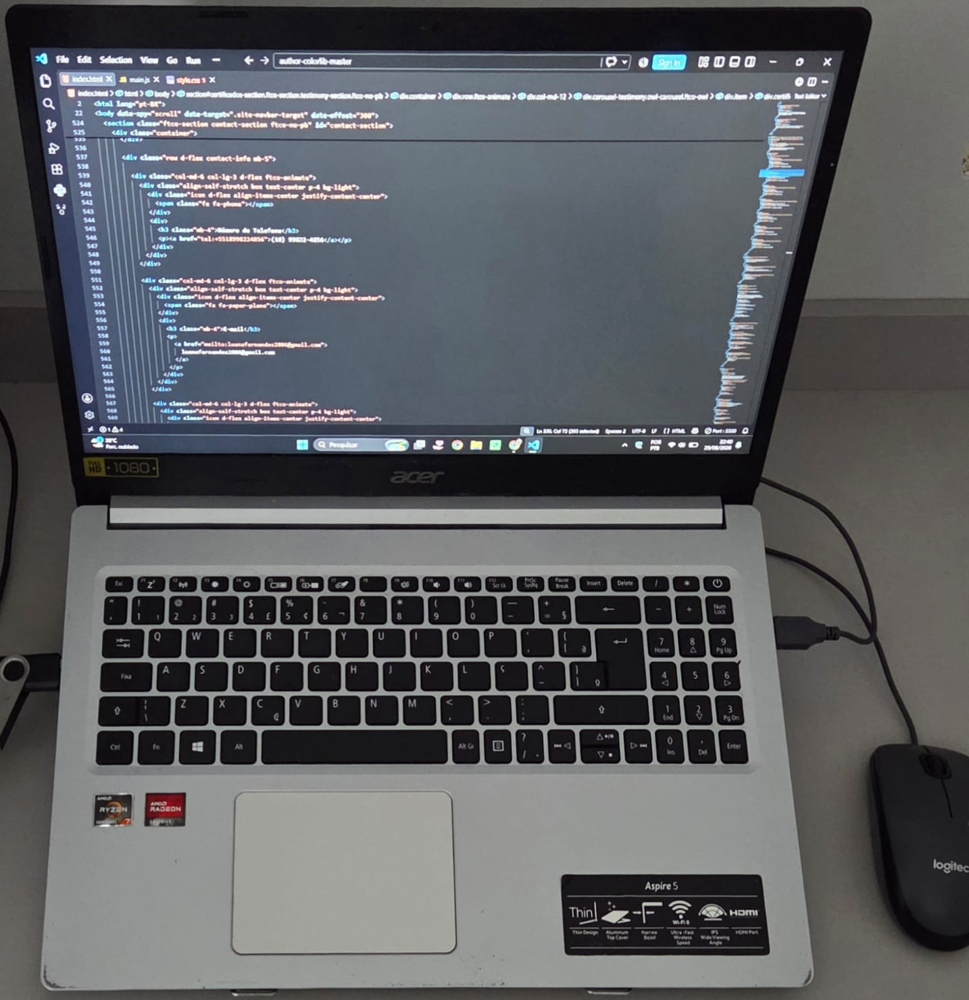

Luana Fernandes
Estudante de Sistemas de InformaçãoAmpliando meus conhecimentos em programação e explorando diferentes áreas da tecnologia por meio da graduação, cursos e experiências práticas.
Sou estudante de Sistemas de Informação, formada no curso Técnico em Desenvolvimento de Sistemas integrado ao Ensino Médio pela ETEC Professor Doutor Eufrásio de Toledo e atualmente atuo como PROATI na EE Gildásio Silva Lima.
Minha trajetória na tecnologia começou ainda durante a formação técnica, quando tive meus primeiros contatos com programação, desenvolvimento de sistemas e outros fundamentos da área de TI.
Atualmente, venho ampliando meus conhecimentos por meio da graduação, de projetos acadêmicos, da experiência profissional e de cursos complementares. Na programação, estou desenvolvendo minha lógica e praticando a construção de códigos e soluções simples.
Ao longo da minha formação, também tive contato com diferentes áreas da tecnologia, como análise de dados, computação em nuvem e inteligência artificial, o que tem contribuído para ampliar minha visão sobre as possibilidades da área.
Busco continuar evoluindo profissionalmente e aprofundando meus conhecimentos, valorizando o aprendizado contínuo, a organização, a autonomia e a resolução de problemas.
Conhecimentos em lógica e fundamentos de programação, com prática na criação de códigos e soluções simples durante minha formação acadêmica.
Contato com diferentes áreas da tecnologia por meio de cursos e atividades acadêmicas, incluindo análise de dados, computação em nuvem e inteligência artificial.
Organização, autonomia, aprendizado contínuo, pensamento analítico, trabalho em equipe e interesse pela resolução de problemas.
Tecnologias e ferramentas com as quais tive contato durante minha formação acadêmica, cursos e estudos complementares.
Java

C

Pacote Office
Banco de Dados
HTML5
Python
Alguns dos certificados que representam minha trajetória de aprendizado e desenvolvimento profissional.

SENAI • 40 horas
08/10/2025 a 14/11/2025SENAI • 40 horas
28/02/2026 a 23/05/2026
Unoeste • 25 horas
Setembro de 2025
HackaTruck / Instituto Eldorado • 50 horas
28/04/2025 a 15/06/2025Unoeste • 15 horas
13/06/2026
Unoeste • 50 horas
27 a 31 de outubro de 2025
SENAI • 32 horas
15/03/2025 a 31/05/2025
Estudante de Sistemas de Informação, com formação técnica em Desenvolvimento de Sistemas e atuação profissional na área de tecnologia. Busco ampliar meus conhecimentos por meio da graduação, projetos acadêmicos e cursos complementares.
Fique à vontade para entrar em contato comigo por telefone, e-mail ou LinkedIn.